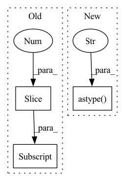

Pattern ID :32430
Before Change
Implementation adapted from https://github.com/DigitalSlideArchive/HistomicsTK/blob/master/histomicstk/preprocessing/color_conversion/rgb_to_lab.py
def rgb2lab(I):
m, n = I.shape[:2]
// get LMS from RGB
rgb = np.reshape(I, (m * n, 3))
lms = np.dot(_rgb2lms, rgb.T)After Change
def rgb2lab(rgb):
return cv.cvtColor(rgb.astype("uint8" ) , cv.COLOR_RGB2LAB)
def rgb2labX(rgb):In pattern: SUPERPATTERN
Frequency: 3
Non-data size: 3
Instances Fragment ID: 94598895
Project Name: eidoslab/torchstain
Commit Name: ba229051afe139adec3583fa4d174ef4ee53cf45
Time: 2022-11-23
Author: andrped94@gmail.com
File Name: torchstain/numpy/utils/rgb2lab.py
M Class Name: AnonimousClass
N Class Name: AnonimousClass
M Method Name: rgb2lab(1)
N Method Name: rgb2lab(1)
M Parent Class:
N Parent Class:
M File Name: torchstain/numpy/utils/rgb2lab.py
N File Name: torchstain/numpy/utils/rgb2lab.py
M Start Line: 23
M End Line: 32
N Start Line: 22
N End Line: 22
Before Change
with open (path, "rb") as f:
buf = f.read()
if len(buf)%2==1:
buf = buf[:-1]
sig = np.frombuffer(buf, dtype="int16")
else:
sig, sr = sf.read(path, sr)
After Change
buf = buf[:-1]
sig = np.frombuffer(buf, dtype="int16")
sig, sr = np.memmap(path, dtype="h", mode="r").astype("float32" ) , sr
else:
sig, sr = sf.read(path, sr)
Fragment ID: 94598894
Project Name: qute012/kosr
Commit Name: bf3ec27288e38044b86f90a61978e360690072f5
Time: 2021-02-03
Author: ejrwls012@gmail.com
File Name: kosr/data/audio.py
M Class Name: AnonimousClass
N Class Name: AnonimousClass
M Method Name: load_audio(3)
N Method Name: load_audio(3)
M Parent Class:
N Parent Class:
M File Name: kosr/data/audio.py
N File Name: kosr/data/audio.py
M Start Line: 10
M End Line: 15
N Start Line: 17
N End Line: 17
Before Change
self.set_input_shape(input_shape)
images = np.array([image] if len(np.shape(image)) == 3 else image)
images = (images * 255) if images.max() < 2 else images
images = [np.array(Image.fromarray(image.astype("uint8")).resize(self.input_shape[::-1] )) for image in images]
images = (np.stack(images) - self.mean) / self.std
images = images if backend.image_data_format() == "channels_last" else images.transpose([0, 3, 1, 2])After Change
def __call__(self, image, resize_method="bilinear", resize_antialias=False, input_shape=None):
if input_shape is not None:
self.set_input_shape(input_shape)
images = np.array([image] if len(np.shape(image)) == 3 else image).astype("float32" )
images = (images * 255) if images.max() < 2 else images
images = images if backend.image_data_format() == "channels_last" else images.transpose([0, 3, 1, 2])
images = functional.convert_to_tensor(images) Fragment ID: 94598893
Project Name: leondgarse/keras_cv_attention_models
Commit Name: 0d75f60fe9a45eedf1b45e31959dff6e982d37f2
Time: 2023-01-29
Author: leondgarse@gmail.com
File Name: keras_cv_attention_models/common_layers.py
M Class Name: PreprocessInput
N Class Name: PreprocessInput
M Method Name: __call__(5)
N Method Name: __call__(5)
M Parent Class:
N Parent Class:
M File Name: keras_cv_attention_models/common_layers.py
N File Name: keras_cv_attention_models/common_layers.py
M Start Line: 613
M End Line: 619
N Start Line: 613
N End Line: 620